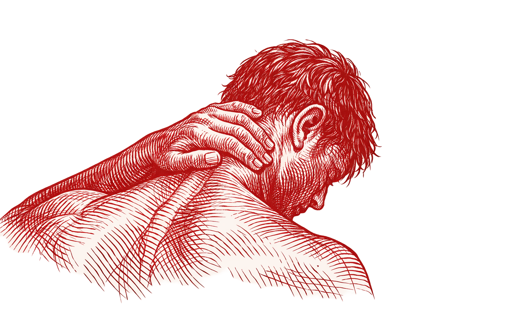

I am the weight
and the strength
that carries it.

On Intention
It is easy to see a thing once and decide what it is.
It is a discipline to look again—to find the repair in the crack and the human in the mirror.
This is where I spend my time.
I’m Johnathan. I’m working on myself.
I’m trying to live with intention, clarity, and care. I’m not perfect. I’m paying attention.
I’m learning to show up the way I mean to.
Consistency is a quiet form of respect.
I care about repair.
Because nothing is ever truly beyond fixing.
I’m trying to be someone worth knowing.
Starting with the person I see every morning.
Some days I don’t get it right.
The work is in the returning.
I’m learning to live honestly.
Even when the truth is inconvenient.
I believe in looking twice.
The first look is for the surface; the second is for the soul.